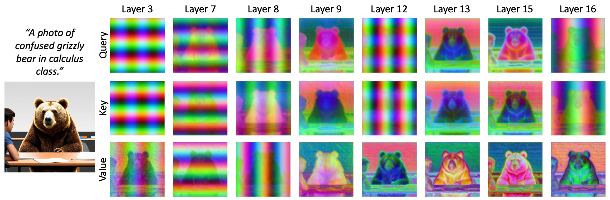

PCA visualization of query, key and value projections. PCA results demonstrate that some layers exhibit strong positional bias, whereas some layers show clear semantic groups.
TL;DR: Seg4Diff analyzes internal mechanisms of multi-modal diffusion transformers to identify semantic grounding expert layers that naturally yield high-quality zero-shot segmentation masks, then enhances them through lightweight LoRA fine-tuning to improve both segmentation and generation quality.
Overview
We introduce Seg4Diff, a systematic framework designed to analyze and enhance the emergent semantic grounding capabilities of multi-modal diffusion transformer (MM-DiT) blocks in text-to-image diffusion transformers (DiTs). Here, semantic grounding expert refers to a specific MM-DiT block responsible for establishing semantic alignment between text and image features.
Analysis
We conduct an in-depth analysis of the joint attention mechanism in MM-DiT models to understand how text and image tokens interact. We characterize the distribution of attention scores to discover active cross-modal interaction, and complement this with attention feature similarity measures to assess which modality exerts greater influence on output representations.
Attention Score Analysis
Multi-modal attention mechanism: (a) Conceptual visualization of the attention map. (b–c) Ratios of attention assigned to image vs. text tokens. The dotted line denotes the ratio under uniform attention. Higher cross-modal proportions are observed in I2T and T2I attention.
Attention Feature Analysis

Attention feature norm analysis. The L2 norm of the value projection for image and text tokens reveals that certain layers exhibit significantly stronger value magnitudes for text tokens compared to image tokens.
Essential Role of I2T Attention in Text-to-Image Generation
Effect of I2T attention perturbation. Blurring the I2T regions of specific attention layers severely disrupts text–image alignment, showing that these layers are crucial for injecting semantic content into images.

Effect of perturbed I2T guidance. By turning this effect into a simple guidance strategy, we achieve images with higher fidelity and stronger alignment to the prompt.
The analysis reveals that specific layers consistently align textual semantics with contiguous image regions, demonstrating emergent semantic grounding capability. These layers naturally yield high-quality zero-shot segmentation masks without explicit training for segmentation tasks.
Zero-shot OVSS Framework
We propose a zero-shot framework for semantic grounding in multi-modal diffusion transformers. Given an input image and text prompt, we extract I2T attention to generate a zero-shot segmentation mask.
Open-vocabulary semantic segmentation scheme in our framework. We generate segmentation masks by interpreting the I2T attention scores, where the score map for each text token serves as a direct measure of image-text similarity to produce the final prediction.
Open-vocabulary semantic segmentation performance across layers. Semantic grounding quality varies across MM-DiT layers, peaking in the middle blocks and specifically at the 9th layer. This trend is similar to what we've found in previous analysis, where semantic grounding is stronger in certain layers. We refer to those layer as semantic grounding expert layers.
Decomposing Multi-modal Attention
Deeper analysis on multi-modal attention mechanism. (a) multi-granularity behavior of token-level and head-level attention, and (b) emergent semantic grouping on <pad> tokens in unconditional generation scenario.
Mask Alignment for Segmentation and Generation (MAGNET)

Lightweight fine-tuning pipeline via mask alignment. We introduce a simple yet effective mask alignment for segmentation and generation (MAGNET) strategy that strengthens the I2T attention maps in the semantic grounding expert layer during additional diffusion fine-tuning with a LoRA adapter.
Experiments
We evaluate Seg4Diff on multiple benchmarks to demonstrate the effectiveness of our method on both segmentation and generation.
Seg4Diff for Segmentation
Qualitative results of Seg4Diff on segmentation tasks.
| Model | Arch. | Train. | VOC20 | Object | PC59 | ADE | City |
|---|---|---|---|---|---|---|---|
| ProxyCLIP | CLIP-H/14 | - | 83.3 | 49.8 | 39.6 | 24.2 | 42.0 |
| CorrCLIP | CLIP-H/14 | - | 91.8 | 52.7 | 47.9 | 28.8 | 49.9 |
| DiffSegmenter | SD1.5 | - | 66.4 | 40.0 | 45.9 | 24.2 | 12.4 |
| iSeg | SD1.5 | - | 82.9 | 57.3 | 39.2 | 24.2 | 24.8 |
| Seg4Diff | SD3 | - | 89.2 | 62.0 | 49.0 | 34.2 | 26.5 |
| Seg4Diff | SD3.5 | - | 86.1 | 57.8 | 43.4 | 30.7 | 23.8 |
| Seg4Diff | Flux.1-dev | - | 83.1 | 50.6 | 38.2 | 23.9 | 17.1 |
| Seg4Diff + MAGNET | SD3 | SA-1B | 89.1 | 62.0 | 49.1 | 34.7 | 25.4 |
| Seg4Diff + MAGNET | SD3 | COCO | 89.8 | 62.9 | 51.2 | 35.2 | 26.0 |
(a) Open-vocabulary semantic segmentation performance. Cross-modal alignment in the I2T attention maps of the semantic grounding expert layer yields competitive results, further enhanced by mask alignment.
| Model | Arch. | Train. | VOC21 | PC59 | Object | Stuff-27 | City | ADE |
|---|---|---|---|---|---|---|---|---|
| ReCO | CLIP-L/14 | - | 25.1 | 19.9 | 15.7 | 26.3 | 19.3 | 11.2 |
| MaskCLIP | CLIP-B/16 | - | 38.8 | 23.6 | 20.6 | 19.6 | 10.0 | 9.8 |
| MaskCut | DINO-B/8 | - | 53.8 | 43.4 | 30.1 | 41.7 | 18.7 | 35.7 |
| DiffSeg | SD1.5 | - | 49.8 | 48.8 | 23.2 | 44.2 | 16.8 | 37.7 |
| DiffCut | SSD-1B | - | 62.0 | 54.1 | 32.0 | 46.1 | 28.4 | 42.4 |
| Seg4Diff | SD3 | - | 54.9 | 52.6 | 38.5 | 49.7 | 24.2 | 44.9 |
| Seg4Diff | SD3.5 | - | 52.3 | 52.9 | 36.8 | 47.1 | 24.2 | 41.5 |
| Seg4Diff + MAGNET | SD3 | SA-1B | 55.1 | 52.8 | 39.0 | 50.8 | 24.2 | 45.0 |
| Seg4Diff + MAGNET | SD3 | COCO | 56.1 | 53.5 | 38.8 | 53.5 | 24.4 | 45.4 |
(b) Unsupervised segmentation performance. Although not specifically designed for unsupervised semantic segmentation, exploiting the emergent semantic grouping of <pad> tokens in the I2T attention maps achieves competitive results.
Seg4Diff for Image Generation
Qualitative results of Mask Alignment. Mask alignment improves structural coherence and alignment between image and text.
| Method | Training | Pick-a-Pic | COCO | SA-1B | Mean |
|---|---|---|---|---|---|
| Baseline | -- | 27.0252 | 26.0638 | 28.3422 | 27.1437 |
| + MAGNET | SA-1B | 27.0547 | 26.2318 | 28.4476 | 27.2447 |
| + MAGNET | COCO | 27.0409 | 26.2319 | 28.5553 | 27.2760 |
(a) CLIPScore on text-to-image generation benchmarks. Mask alignment consistently improves alignment with text prompts across various datasets.
| Method | Training | Attribute binding | Object relationships | Num. | Comp. | ||||
|---|---|---|---|---|---|---|---|---|---|
| Color | Shape | Texture | 2D | 3D | non | ||||
| Baseline | -- | 0.7864 | 0.5644 | 0.7200 | 0.2435 | 0.3318 | 0.3124 | 0.5566 | 0.3719 |
| + MAGNET | SA-1B | 0.7836 | 0.5679 | 0.7252 | 0.2330 | 0.3151 | 0.3113 | 0.5460 | 0.3709 |
| + MAGNET | COCO | 0.7919 | 0.5687 | 0.7260 | 0.2301 | 0.3234 | 0.3120 | 0.5584 | 0.3735 |
(b) T2I-Compbench++ performance. Mask alignment enhances attribute binding, object relationships, and compositional understanding compared to the baseline.
Conclusion
In this work, we introduce Seg4Diff, a systematic analysis framework for multi-modal diffusion transformers that identifies semantic grounding expert layers capable of producing high-quality zero-shot segmentation masks. Our comprehensive analysis reveals that semantic alignment is an emergent property of diffusion transformers and can be selectively amplified through lightweight LoRA fine-tuning to improve both dense recognition and generative performance.
Citation
If you use this work or find it helpful, please consider citing:
@article{kim2025seg4diff,
title={Seg4Diff: Unveiling Open-Vocabulary Segmentation in Text-to-Image Diffusion Transformers},
author={Kim, Chaehyun and Shin, Heeseong and Hong, Eunbeen and Yoon, Heeji and Arnab, Anurag and Seo, Paul Hongsuck and Hong, Sunghwan and Kim, Seungryong},
journal={arXiv preprint arXiv:2025.xxxxx},
year={2025}
}